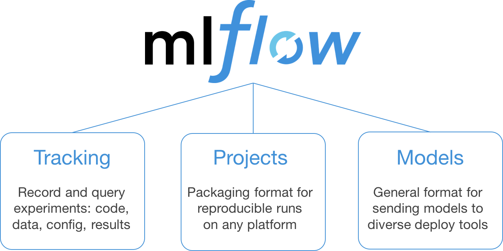
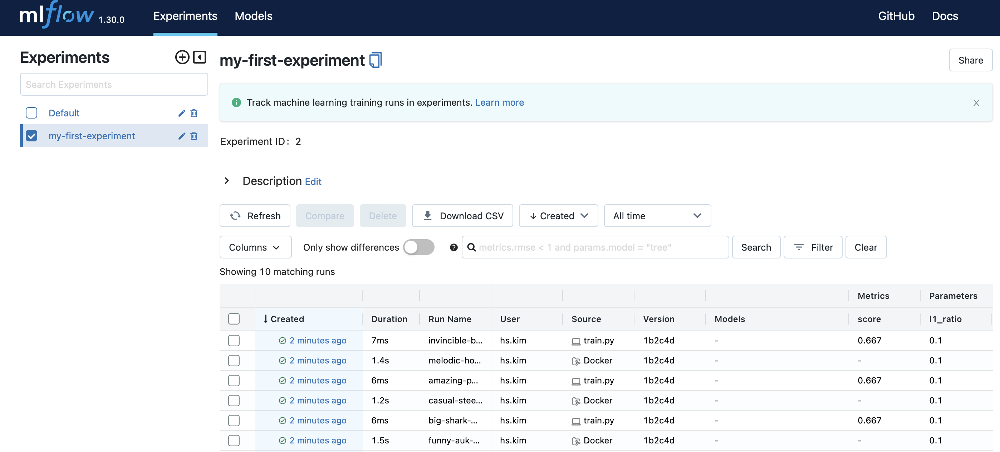
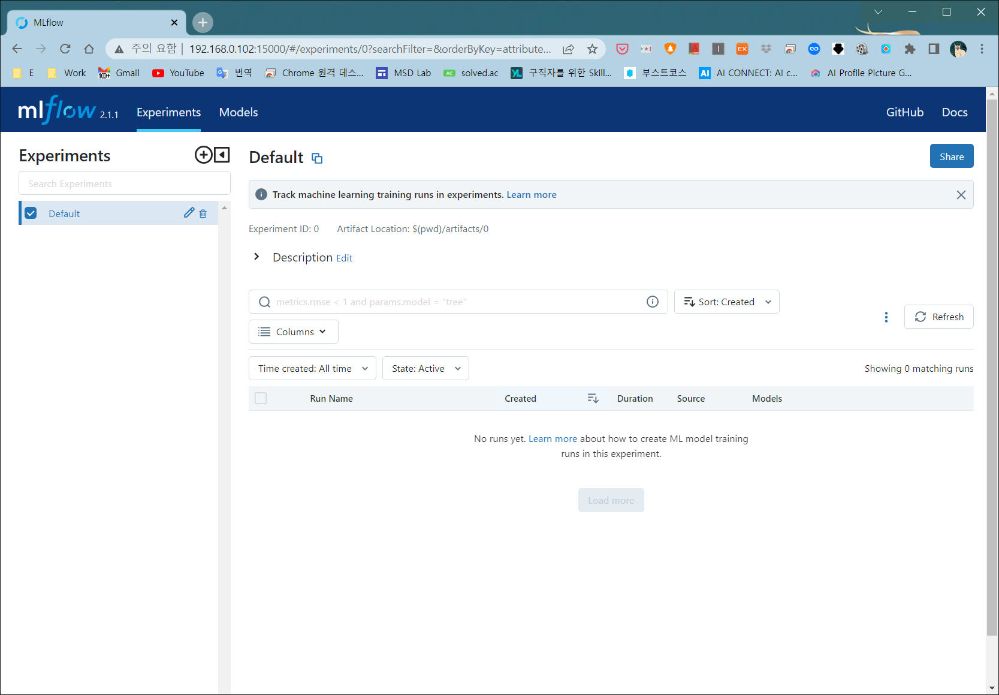

MLflow - A platform for the machine learning lifecycle
An open source platform for the machine learning lifecycle MLflow is an open source platform to manage the ML lifecycle, including experimentation, reproducibility, deployment, and a central model registry.
https://mlflow.org
mlflow
The module provides a high-level “fluent” API for starting and managing MLflow runs.
https://www.mlflow.org/docs/latest/python_api/mlflow.html
https://github.com/404Vector/Docker.MLFlow

What is ML Flow
MLflow는 실험, 재현성, 배포 및 중앙 모델 레지스트리를 포함한 ML 수명 주기를 관리하는 오픈 소스 플랫폼
-
MLflow Tracking
Record and query experiments: code, data, config, and results
-
MLflow Projects
Package data science code in a format to reproduce runs on any platform
-
MLflow Models
Deploy machine learning models in diverse serving environments
-
Model Registry
Store, annotate, discover, and manage models in a central repository
ML Flow 기본 구조
Experiment > Run > Prameter, Metric, Model, Result Image, …etc
Project

- Prameter, Metric, Model, Result Image, …etc
- ML Flow에 기록하고자 하는 정보들(ex: f1 score, accuracy, miou, … etc)
- Run
- python code(entry point) 1회 실행 시, 모아지는 정보들(위에 prameter, metric)의 집합
- 예를 들어, run 하나 하나는 train.py 를 한 번 돌렸을 때 나오는 여러가지 기록들을 가지고 있음
- Experiment
-
ML Flow로 기록하는 정보의 가장 큰 단위
-
같은 종류의 Run들의 집합
-
예를 들어, Mask & Gender & Age 를 각각 분류한다면 Mask Experiment & Gender Experiment & Age Experiment로 구분할 수 있음
-
Logging, Running
훈련을 하기 위해서는 python으로 code를 만듬 → train.py
# train.py
import argparse
import sys
import numpy as np
from sklearn.linear_model import LogisticRegression
import mlflow
from mlflow import log_metric, log_param, log_artifacts
if __name__ == "__main__":
X = np.array([-2, -1, 0, 1, 2, 1]).reshape(-1, 1)
y = np.array([0, 0, 1, 1, 1, 0])
lr = LogisticRegression(solver=sys.argv[1], penalty=sys.argv[2], l1_ratio=float(sys.argv[3]))
with mlflow.start_run() as run:
lr.fit(X, y)
log_param("solver", sys.argv[1])
log_param("penalty", sys.argv[2])
log_param("l1_ratio", sys.argv[3])
score = float(lr.score(X, y))
log_metric("score", score)
print("Score: %s" % score)Logging
mlflow.start_run() 으로 기록을 시작, mlflow.end_run() 으로 기록을 종료
\#---- 방법 1----
with mlflow.start_run() as run:
#~logging
\#---- 방법 2----
mlflow.start_run()
# ~ logging
mlflow.end_run()기록하고 싶은 항목들은 위와 같이 mlflow.log_* 등의 메소드를 통해 코드 내부에서 지정
Execute
그럼 저 코드를 mlflow를 통해 실행 및 기록하려면 어떻게 해야 할까?
이를 위해서는 mlflow에게 어떤 파일을 어떤 파라메터를 넣고 어떤 파일을 실행할지 알려줘야 할 필요가 있음
ml flow는 Dockerfile처럼 ‘MLProject’라는 파일을 통해 이 정보를 기록
some-project-folder
- MLProject # mlflow에게 넘겨줘야 할 정보들이 담겨있는 파일
train.py # 훈련을 위해 만든 코드
(예시 파일)
# MLProject
name: tutorial
entry_points:
main:
parameters:
solver:
type: string
default: "saga"
penalty:
type: string
default: "l2"
l1_ratio:
type: float
default: 0.1
command: "python train.py {solver} {penalty} {l1_ratio}"실행을 위해서는 아래와 같이 어떤 파일이 아닌, MLProject가 들어있는 폴더의 경로를 입력해줌
mlflow run ./some-project-folder --experiment-name "some-experiment"
이 때, ‘some-experiment’ 자리에 입력하는 변수가 앞서 언급했던 Experiment를 의미
ML Flow 사용
localhost 단일 사용(Running & Tracking)
Important
local에서 사용 시(mlflow run ~), 현재 경로의 [mlruns]폴더를 만들어서 기록을 저장
따라서 같은 경로에서 tracking server를 (mlflow ui 를 입력)실행
localhost(Running) + localhost Docker(Tracking)
localhost(Running)
- [some working directory]
— [mlruns]localhost docker(Tracking)
- [some working directory] # docker command를 사용해서 local의 경로를 mount
docker를 이용해서 tracking server를 따로 가져간다고 해도 mount를 통해 working directory를 공유하면 되기 때문에 사용이 크게 다르지 않다
localhost(Running) + remotehost(Tracking)
local(Running)
- [some working directory]
— [mlruns]remotehost(Tracking Server)
- [some working directory]
— [mlruns]/mlflow.db
- mlflow server -h 0.0.0.0 —backend-store-uri sqlite:///mlflow.db
- https://dailyheumsi.tistory.com/260 읽어보기
성공!

localhost(Running & Tracking)
- [some working directory]
— [mlruns]